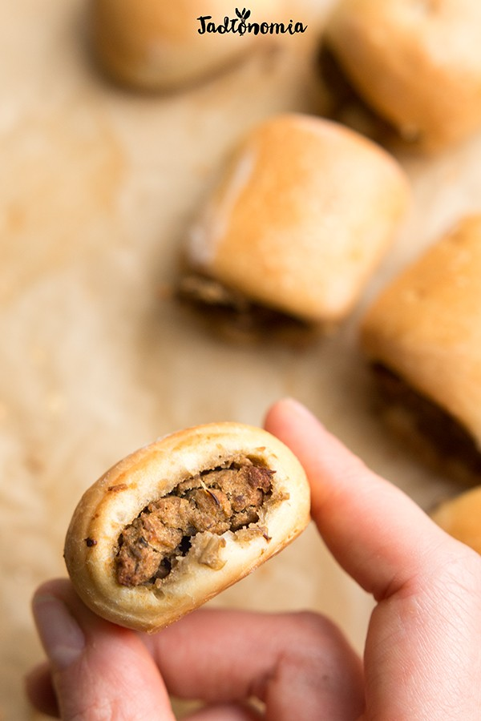

Czas przygotowania: powyżej godziny
Składniki na 40 - 50 pasztecików:
Ciasto:
1 szklanka i 2 łyżki mleka roślinnego
3 szklanki mąki pszennej tradycyjnej lub orkiszowej
1 paczka suchych drożdży
2 łyżeczki cukru trzcinowego
1/2 łyżeczki soli
1/3 szklanki oleju
Farsz:
1 szklanka soczewicy brązowej lub zielonej
4 suszone grzyby, można pominąć
1/2 łyżeczki oleju
sól
1 cebula, duża
2 liście laurowe
2 ziela angielskie
2 goździki
1 jałowiec
5 łyżek oleju
2 łyżki sosu sojowego
sól i czarny pieprz
spora szczypta gałki muszkatołowej
2 łyżki roślinnego mleka
Przygotowanie:
Przygotowanie ciasta: mleko podgrzać w małym rondelku – ma być ciepłe, ale nie gorące. Do naczynia miksera wsypać mąkę, dodać cukier, drożdże, sól i ciepłe mleko i wyrabiać przez 3 – 4 minuty. Następnie wlać olej i wyrabiać kolejne 2 – 3 minuty. Kiedy ciasto będzie elastyczne wyjąć z miksera, uformować w kulę, miskę lekko podsypać mąką i włożyć tak uformowane ciasto do miski. Miskę przykryć podwójną warstwą ściereczek kuchennych i zostawić na 1 – 1,5 godziny do wyrastania w ciepłym miejscu bez przeciągów. Przygotowanie farszu: do rondelka dodać soczewicę, grzyby, olej, sól i wlać tyle wody, żeby przykryła soczewicę na 3 palce. Gotować pod przykryciem na niedużym ogniu przez 18 – 20 minut. W międzyczasie cebulę pokroić w kostkę. Na patelni rozgrzać olej, dodać wszystkie przyprawy i podsmażać przez 4 – 5 minut do momentu, aż cebula będzie miękka i złota. Z miękkiej cebulki wyłowić przyprawy, ugotowaną soczewicę odcedzić i z powrotem włożyć do garnka. Do soczewicy dodać cebulkę z olejem, sos sojowy, sól, pieprz oraz sporą szczyptę gałki i wszystko zblendować na gładką masę. Na koniec dodać mleko roślinne i ponownie zblendować. Przełożyć na duży talerz i odstawić w chłodne miejsce do przestudzenia. Formowanie pasztecików: po upływie przynajmniej godziny wyrośnięte ciasto chwilę wyrabiać rękami, a następnie rozwałkować na grubość 0,5 cm, w razie potrzeby lekko podsypując mąką. Podzielić na 3 lub 4 długie pasy szerokie na około 6 – 8 cm. Na środek każdego pasa nałożyć przygotowany farsz, skleić i obrócić zlepieniem do dołu. Pokroić na małe paszteciki. Wyrastanie: paszteciki przełożyć na papier do pieczenia, przykryć ściereczką i zostawić do wyrastania na przynajmniej 30 minut. Piekarnik ustawić na 180 stopni i pozwolić mu się rozgrzać. Pieczenie: wyrośnięte paszteciki posmarować mlekiem roślinnym, wsunąć do piekarnika i piec przez około 20 – 25 minut do czasu, aż będą złote. Podawać na ciepło lub na zimno, pyszne z barszczem, zupą grzybową, bigosem albo wigilijną kapustką.
Propozycja podania:
